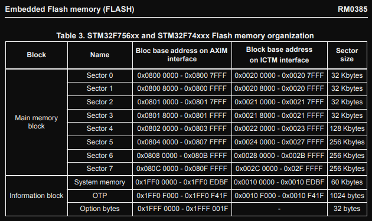

Overview
This aims to delve into the actual play.date console platform itself, including (but not limited to) the game build process, the onboard operating system, and the peripherals on board the console, the things with no existing documentation.
Note that any code marked as Example Code (such as, but not limited to the
Game of Life C example) or stated to be provided in the SDK or constructed by
Panic Inc. has sole IP ownership by Panic Inc. and belongs to them.
Previous Work
Most of the past work has been focused on the API, the overal structure of the packaged game files, and the soundtracks, not too much has been focused on platform introspection itself. At a high level a lot of the work is already laid out for us a la play.date reversing, but the things it ignores - the underlying runtime, the api for the game binaries themselves, and how the play.date is the play.date. That still needs to be uncovered.
Also i want a web browser on it lol.
Is any of this even allowed?
Yeah basically.
The big "don't"'s of the SDK license are:
You will not:
- Modify, disassemble, or decompile any part of the SDK;
- Distribute or transfer the SDK to others (other than the incorporation of distributable elements of the SDK in Your Developed Programs in accordance with the terms of this Agreement);
- Modify, adapt, alter, translate, or incorporate into or with other software or create a derivative work of any part of the SDK, except as permitted herein, without express written permission from Panic;
- Use the SDK to develop applications for other platforms or to develop another SDK, without express written permission from Panic.
The other fun one not in the initial bullets:
"[You will not] Use the SDK to create, develop, or use any program, software, or service which (1) contains any viruses, Trojan horses, worms, or other computer programming routines that are intended to damage, detrimentally interfere with, surreptitiously intercept, or expropriate any system, data, or personal information; (2) when used in the manner in which it is intended, violates any applicable law, statute, ordinance, or regulation (including without limitation the laws and regulations governing export control, unfair competition, anti-discrimination, false advertising, or data privacy); (3) infringes the intellectual property rights of third parties; or (4) interferes with the operability of other Panic or third-party programs or software; "
Addressing the don't's
- No changes are being made to the SDK, theres nothing of interest in the SDK to disassemble or decompile (the only things we could would be
pdutilsandpdc). - The SDK is not being redistributed so othing to worry about
- The SDK is not being modified
- The SDK is not being used to develop for another platform or "develop another SDK"
- not doing any of that illegal stuff
Game Binary Internals
This gives a brief overview of what an example project setup could look like, what the build process for the project is, and what the emitted binary structure is. This focuses on what builds with the C SDK look like, and does not address lua at all.
NOTE:
This uses the
C_API/Examples/Lifeexample from the SDK extensively.
A Game of Life
This is going to to a quick "once over" of the code they gave as example
for Conway's Game of Life.
Life is a classic nerd example and is fairly straghforward.
This is more concerned with the actual effect of the code layout as opposed to the code itself.
The initial file strucure of Life looks like:
$ tree
CMakeLists.txt
main.c
Makefile
Source/
- pdxinfo
We can basically ignore the pdxinfo for now, and the Makefile as well. CMake is more powerful than Make and allows for cleaner builds imo and its easier to decipher wtf is actually going on so we'll look at CMakeLists.txt.
Note the lines:
if (TOOLCHAIN STREQUAL "armgcc")
add_executable(${PLAYDATE_GAME_DEVICE} ${SDK}/C_API/buildsupport/setup.c main.c)
else()
add_library(${PLAYDATE_GAME_NAME} SHARED main.c )
endif()
include(${SDK}/C_API/buildsupport/playdate_game.cmake)
As we're focusing on binaries for the actual device we don't actually care about the else branch.
Input files
The input compilation units to this game are going to be:
- setup.c (provided by SDK)
- main.c (from user code)
main.c
What main does in general is entirely up to the user, but as per the docs, must contain, at a minimum:
- overwrite
playdate->system->setUpdateCallback()for the pure C project. - implement
eventHandler()
what is setup.c?
This is where a lot of the play.date magic happens, and is a file provided in the SDK.
At a high level it is putting a more accessible name of their allocator in scope, and making wrappers around malloc(), free(),
and realloc(). Then is arranging the sections in the compilation unit so that the entry to
your defined code is always in the same place. This simplifies their API to all games and
is a really cool API decision on their part.
So how do they do all of this?
With *code*:
PDEventHandler* PD_eventHandler __attribute__((section(".capi_handler"))) = &eventHandlerShim;
extern uint32_t bssStart asm("__bss_start__");
uint32_t* _bss_start __attribute__((section(".bss_start"))) = &bssStart;
extern uint32_t bssEnd asm("__bss_end__");
uint32_t* _bss_end __attribute__((section(".bss_end"))) = &bssEnd;
.capi_handler
bss okay cool thats standard C programming stuff (initialized 0 memory),
but what is .capi_handler??? According to OpenAI's ChatGPT:
The .capi_handler section is a section of memory in a program that is reserved for storing data related to C++ exception handling. This data is used by the C++ runtime library to implement the C++ exception handling mechanism.
In a C++ program, when an exception is thrown, the exception object is passed to the C++ runtime library, which searches for an exception handler that is capable of handling the exception. The runtime library uses the data stored in the .capi_handler section to determine which exception handlers are available and how to invoke them.
The .capi_handler section is created by the linker when it links a C++ program. The linker generates the .capi_handler section based on information in the object files generated by the compiler.
Cool, so it sounds like they took advantage of the fact that the input code is only C, then
threw a pointer to the event handler in a section that would otherwise be unpopulated.
But what is the thing they are putting in that section? eventHandlerShim() is not a user
function.
Shim code:
int eventHandlerShim(PlaydateAPI* playdate, PDSystemEvent event, uint32_t arg)
{
if ( event == kEventInit )
pdrealloc = playdate->system->realloc;
return eventHandler(playdate, event, arg);
}
The shim makes sure that the allocator pointer is headed to the right place before any user game
code executes. This is a pretty nice extra layer of developer nicities for us in that there is
one less thing to worry about (the pdrealloc is used in their helper malloc(), free(),
realloc(), implementations).
.bss
Also remember that in the setup.c they make a point to put a pointer to the __bss_start__
and __bss_end__ addresses in their own sections, so now we are up to 3 custom sections going
into the actual build step (in addition to the default .text, .data etc).
So how is this going to look when it actually builds?
Building
NOTE:
Building binaries using their device / arm SDK requires some dependencies. The only things i needed to install were: apt install arm-none-eabi-binutils, and snap install cmake since the apt version is wildly out of date.
Assuming all the dependencies are installed and everything is setup correctly you should be able
to build the SDK's Life example and it should just work, note that you need to override the
defult toolchain file for cmake, see the below commands for more.
We're going to run the build commands, then dissect what's going on under the hood from all the automagic stuffs we're given from Panic Inc. ( the automagic stuff is great btw <3 ).
Running the Build
Without any of the build output here are the types of commands needed to build an actual project, nothing more than your standard cmake build.
# run from within the `Life` project directory
$ mkdir build && cd build
# run the initial cmake build setup step, and override the toolchain
$ PLAYDATE_SDK_PATH=~/d/o/play.date/sdk-1.12.3 cmake .. -DCMAKE_TOOLCHAIN_FILE=~/d/o/play.date/sdk-1.12.3/C_API/buildsupport/arm.cmake
# build it, not sure if you need to provide the sdk path but i did anyways
$ PLAYDATE_SDK_PATH=~/d/o/play.date/sdk-1.12.3 make Life_DEVICE
Again, except with output
# prep the build
$ pwd
[..]/sdk-1.12.3/C_API/Examples/Life
$ mkdir build && cd build
$ PLAYDATE_SDK_PATH=~/d/o/play.date/sdk-1.12.3 cmake .. -DCMAKE_TOOLCHAIN_FILE=~/d/o/play.date/sdk-1.12.3/C_API/buildsupport/arm.cmake
-- arm.cmake loaded
-- arm.cmake loaded
-- The C compiler identification is GNU 8.3.1
-- The ASM compiler identification is GNU
-- Found assembler: /usr/bin/arm-none-eabi-gcc
-- Detecting C compiler ABI info
-- Detecting C compiler ABI info - done
-- Check for working C compiler: /usr/bin/arm-none-eabi-gcc - skipped
-- Detecting C compile features
-- Detecting C compile features - done
-- SDK Path: /home/lockbox/d/o/play.date/sdk-1.12.3
-- Configuring done
-- Generating done
-- Build files have been written to: /home/lockbox/d/o/play.date/sdk-1.12.3/C_API/Examples/Life/build
# do the build
$ PLAYDATE_SDK_PATH=~/d/o/play.date/sdk-1.12.3 make Life_DEVICE
/snap/cmake/1210/bin/cmake -S/home/lockbox/d/o/play.date/sdk-1.12.3/C_API/Examples/Life -B/home/lockbox/d/o/play.date/sdk-1.12.3/C_API/Examples/Life/build --check-build-system CMakeFiles/Makefile.cmake 0
make -f CMakeFiles/Makefile2 Life_DEVICE
make[1]: Entering directory '/home/lockbox/d/o/play.date/sdk-1.12.3/C_API/Examples/Life/build'
/snap/cmake/1210/bin/cmake -S/home/lockbox/d/o/play.date/sdk-1.12.3/C_API/Examples/Life -B/home/lockbox/d/o/play.date/sdk-1.12.3/C_API/Examples/Life/build --check-build-system CMakeFiles/Makefile.cmake 0
/snap/cmake/1210/bin/cmake -E cmake_progress_start /home/lockbox/d/o/play.date/sdk-1.12.3/C_API/Examples/Life/build/CMakeFiles 3
make -f CMakeFiles/Makefile2 CMakeFiles/Life_DEVICE.dir/all
make[2]: Entering directory '/home/lockbox/d/o/play.date/sdk-1.12.3/C_API/Examples/Life/build'
make -f CMakeFiles/Life_DEVICE.dir/build.make CMakeFiles/Life_DEVICE.dir/depend
make[3]: Entering directory '/home/lockbox/d/o/play.date/sdk-1.12.3/C_API/Examples/Life/build'
cd /home/lockbox/d/o/play.date/sdk-1.12.3/C_API/Examples/Life/build && /snap/cmake/1210/bin/cmake -E cmake_depends "Unix Makefiles" /home/lockbox/d/o/play.date/sdk-1.12.3/C_API/Examples/Life /home/lockbox/d/o/play.date/sdk-1.12.3/C_API/Examples/Life /home/lockbox/d/o/play.date/sdk-1.12.3/C_API/Examples/Life/build /home/lockbox/d/o/play.date/sdk-1.12.3/C_API/Examples/Life/build /home/lockbox/d/o/play.date/sdk-1.12.3/C_API/Examples/Life/build/CMakeFiles/Life_DEVICE.dir/DependInfo.cmake --color=
make[3]: Leaving directory '/home/lockbox/d/o/play.date/sdk-1.12.3/C_API/Examples/Life/build'
make -f CMakeFiles/Life_DEVICE.dir/build.make CMakeFiles/Life_DEVICE.dir/build
make[3]: Entering directory '/home/lockbox/d/o/play.date/sdk-1.12.3/C_API/Examples/Life/build'
[ 33%] Building C object CMakeFiles/Life_DEVICE.dir/home/lockbox/d/o/play.date/sdk-1.12.3/C_API/buildsupport/setup.c.obj
/usr/bin/arm-none-eabi-gcc -DTARGET_EXTENSION=1 -DTARGET_PLAYDATE=1 -I/home/lockbox/d/o/play.date/sdk-1.12.3/C_API -Wall -Wno-unknown-pragmas -Wdouble-promotion -mthumb -mcpu=cortex-m7 -mfloat-abi=hard -mfpu=fpv5-sp-d16 -D__FPU_USED=1 -falign-functions=16 -fomit-frame-pointer -gdwarf-2 -fverbose-asm -ffunction-sections -fdata-sections -std=gnu11 -MD -MT CMakeFiles/Life_DEVICE.dir/home/lockbox/d/o/play.date/sdk-1.12.3/C_API/buildsupport/setup.c.obj -MF CMakeFiles/Life_DEVICE.dir/home/lockbox/d/o/play.date/sdk-1.12.3/C_API/buildsupport/setup.c.obj.d -o CMakeFiles/Life_DEVICE.dir/home/lockbox/d/o/play.date/sdk-1.12.3/C_API/buildsupport/setup.c.obj -c /home/lockbox/d/o/play.date/sdk-1.12.3/C_API/buildsupport/setup.c
[ 66%] Building C object CMakeFiles/Life_DEVICE.dir/main.c.obj
/usr/bin/arm-none-eabi-gcc -DTARGET_EXTENSION=1 -DTARGET_PLAYDATE=1 -I/home/lockbox/d/o/play.date/sdk-1.12.3/C_API -Wall -Wno-unknown-pragmas -Wdouble-promotion -mthumb -mcpu=cortex-m7 -mfloat-abi=hard -mfpu=fpv5-sp-d16 -D__FPU_USED=1 -falign-functions=16 -fomit-frame-pointer -gdwarf-2 -fverbose-asm -ffunction-sections -fdata-sections -std=gnu11 -MD -MT CMakeFiles/Life_DEVICE.dir/main.c.obj -MF CMakeFiles/Life_DEVICE.dir/main.c.obj.d -o CMakeFiles/Life_DEVICE.dir/main.c.obj -c /home/lockbox/d/o/play.date/sdk-1.12.3/C_API/Examples/Life/main.c
[100%] Linking C executable Life_DEVICE.elf
/snap/cmake/1210/bin/cmake -E cmake_link_script CMakeFiles/Life_DEVICE.dir/link.txt --verbose=1
/usr/bin/arm-none-eabi-gcc -mthumb -mcpu=cortex-m7 -mfloat-abi=hard -mfpu=fpv5-sp-d16 -D__FPU_USED=1 -T/home/lockbox/d/o/play.date/sdk-1.12.3/C_API/buildsupport/link_map.ld -Wl,-Map=game.map,--cref,--gc-sections,--no-warn-mismatch "CMakeFiles/Life_DEVICE.dir/home/lockbox/d/o/play.date/sdk-1.12.3/C_API/buildsupport/setup.c.obj" CMakeFiles/Life_DEVICE.dir/main.c.obj -o Life_DEVICE.elf
/usr/bin/arm-none-eabi-objcopy -Obinary Life_DEVICE.elf /home/lockbox/d/o/play.date/sdk-1.12.3/C_API/Examples/Life/Source/pdex.bin
cd /home/lockbox/d/o/play.date/sdk-1.12.3/C_API/Examples/Life && /home/lockbox/d/o/play.date/sdk-1.12.3/bin/pdc -sdkpath /home/lockbox/d/o/play.date/sdk-1.12.3 Source Life.pdx
make[3]: Leaving directory '/home/lockbox/d/o/play.date/sdk-1.12.3/C_API/Examples/Life/build'
[100%] Built target Life_DEVICE
make[2]: Leaving directory '/home/lockbox/d/o/play.date/sdk-1.12.3/C_API/Examples/Life/build'
/snap/cmake/1210/bin/cmake -E cmake_progress_start /home/lockbox/d/o/play.date/sdk-1.12.3/C_API/Examples/Life/build/CMakeFiles 0
make[1]: Leaving directory '/home/lockbox/d/o/play.date/sdk-1.12.3/C_API/Examples/Life/build'
Examining the internal CMake files
<todo - not really super important, understanding them just makes things less automagic>
Build Steps
Build setup.c + main.c
This step is only one (ridiculous) gcc invocation, note that for each step (setup.c and main.c,
and any other compilation unit), the flags are the same unless manually changed:
# prettified
/usr/bin/arm-none-eabi-gcc \
-DTARGET_EXTENSION=1 \
-DTARGET_PLAYDATE=1 \
-I/home/lockbox/d/o/play.date/sdk-1.12.3/C_API \
-Wall \
-Wno-unknown-pragmas \
-Wdouble-promotion \
-mthumb \
-mcpu=cortex-m7 \
-mfloat-abi=hard \
-mfpu=fpv5-sp-d16 \
-D__FPU_USED=1 \
-falign-functions=16 \
-fomit-frame-pointer \
-gdwarf-2 \
-fverbose-asm \
-ffunction-sections \
-fdata-sections \
-std=gnu11 \
-MD \
-MT CMakeFiles/Life_DEVICE.dir/home/lockbox/d/o/play.date/sdk-1.12.3/C_API/buildsupport/setup.c.obj \
-MF CMakeFiles/Life_DEVICE.dir/home/lockbox/d/o/play.date/sdk-1.12.3/C_API/buildsupport/setup.c.obj.d \
-o CMakeFiles/Life_DEVICE.dir/home/lockbox/d/o/play.date/sdk-1.12.3/C_API/buildsupport/setup.c.obj \
-c /home/lockbox/d/o/play.date/sdk-1.12.3/C_API/buildsupport/setup.c
Deciphering the gcc options they used
references:
- https://gcc.gnu.org/onlinedocs/gcc/ARM-Options.html
- https://gcc.gnu.org/onlinedocs/gcc/Preprocessor-Options.html
- gcc manpage
- processor manual
- https://stackoverflow.com/questions/4274804/query-on-ffunction-section-fdata-sections-options-of-gcc
- I'm curious what decisions drove them to do this, their results is some jank form of PIC with a bunch of extra data they don't need?
| Option | What it's doing |
|---|---|
| -DTARGET_EXTENSION=1 | Custom define for some of the CMake build system |
| -DTARGET_PLAYDATE=1 | Custom define for some of the CMake build system |
| -I/home/lockbox/d/o/play.date/sdk-1.12.3/C_API | Add the C_API to the include path |
| -Wall | Warn against all the common stuff |
| -Wno-unknown-pragmas | manually disable unknown-pragmas since -Wall enables it |
| -Wdouble-promotion | enable double-promotion warning |
| -mthumb | emit thumb code |
| -mcpu=cortex-m7 | select cpu |
| -mfloat-abi=hard | enable hard float support |
| -mfpu=fpv5-sp-d16 | select the target FPU |
| -D__FPU_USED=1 | Define intrinsic variable for FPU support |
| -falign-functions=16 | Align functions to 16 bytes, (as per cpu docs) |
| -fomit-frame-pointer | Only use frame pointers when necessary (generally non-small functions) |
| -gdwarf-2 | use dwarf2 debug info |
| -fverbose-asm | add extra "readability" syntax to generated asm, shouldnt be used? gross. |
| -ffunction-sections | Place each function in it's own section |
| -fdata-sections | Place each data item in it's own section |
| -std=gnu11 | Set compiler standard |
| -MD -MT CMakeFiles/Life_DEVICE.dir/home/lockbox/d/o/play.date/sdk-1.12.3/C_API/buildsupport/setup.c.obj | preprocessor arg |
| -MF CMakeFiles/Life_DEVICE.dir/home/lockbox/d/o/play.date/sdk-1.12.3/C_API/buildsupport/setup.c.obj.d | preprocessor arg |
| -o CMakeFiles/Life_DEVICE.dir/home/lockbox/d/o/play.date/sdk-1.12.3/C_API/buildsupport/setup.c.obj | output object file |
| -c /home/lockbox/d/o/play.date/sdk-1.12.3/C_API/buildsupport/setup.c | input file to compile |
Link Step
Now the fun part - the link step.
/usr/bin/arm-none-eabi-gcc \
-mthumb \
-mcpu=cortex-m7 \
-mfloat-abi=hard \
-mfpu=fpv5-sp-d16 \
-D__FPU_USED=1 \
-T/home/lockbox/d/o/play.date/sdk-1.12.3/C_API/buildsupport/link_map.ld \
-Wl,-Map=game.map,--cref,--gc-sections,--no-warn-mismatch \
"CMakeFiles/Life_DEVICE.dir/home/lockbox/d/o/play.date/sdk-1.12.3/C_API/buildsupport/setup.c.obj" \
CMakeFiles/Life_DEVICE.dir/main.c.obj \
-o Life_DEVICE.elf
Many of the options are similar to the above build commands, the new flags however, are parameters to pass to the linker.
References:
- https://sourceware.org/binutils/docs/ld.html
| Linker Options | Effect |
|---|---|
| -Tlink_map.ld | use link_map.ld as the linker script |
| -Map=game.map | output map to file game.map |
| --cref | print symbol cross reference information to the map file |
| --gc-sections | link-tme section garbage collection |
| --no-warn-mismatch | ignore errors from linking mismatched objects |
Quote from ld documentation:
3.6.4.4 Input Section and Garbage Collection When link-time garbage collection is in use (‘--gc-sections’), it is often useful to mark sections that should not be eliminated. This is accomplished by surrounding an input section’s wildcard entry with KEEP(), as in KEEP(*(.init)) or KEEP(SORT_BY_NAME(*)(.ctors)).
What this is doing
The output symbol / section map for Life_DEVICE.elf is getting dumped to game.map, so now
we can retroactively figure out what things are at x offset into memory etc.
Parsing link_map.ld
Custom Linker script:
MEMORY
{
EXTRAM (rwx): ORIGIN = 0x60000000, LENGTH = 8*1024K
}
GROUP(libgcc.a libc.a libm.a)
SECTIONS
{
.capi :
{
KEEP(*(.capi_handler))
KEEP(*(.bss_start))
KEEP(*(.bss_end))
} > EXTRAM
.text :
{
*(.text)
KEEP(*(.init))
KEEP(*(.fini))
/* .ctors */
*crtbegin.o(.ctors)
*crtbegin?.o(.ctors)
*(EXCLUDE_FILE(*crtend?.o *crtend.o) .ctors)
*(SORT(.ctors.*))
*(.ctors)
/* .dtors */
*crtbegin.o(.dtors)
*crtbegin?.o(.dtors)
*(EXCLUDE_FILE(*crtend?.o *crtend.o) .dtors)
*(SORT(.dtors.*))
*(.dtors)
*(.rodata*)
KEEP(*(.eh_frame*))
} > EXTRAM
.data :
{
__etext = .;
__data_start__ = .;
*(vtable)
*(.data*)
. = ALIGN(4);
/* preinit data */
PROVIDE_HIDDEN (__preinit_array_start = .);
KEEP(*(.preinit_array))
PROVIDE_HIDDEN (__preinit_array_end = .);
. = ALIGN(4);
/* init data */
PROVIDE_HIDDEN (__init_array_start = .);
KEEP(*(SORT(.init_array.*)))
KEEP(*(.init_array))
PROVIDE_HIDDEN (__init_array_end = .);
. = ALIGN(4);
/* finit data */
PROVIDE_HIDDEN (__fini_array_start = .);
KEEP(*(SORT(.fini_array.*)))
KEEP(*(.fini_array))
PROVIDE_HIDDEN (__fini_array_end = .);
. = ALIGN(4);
/* All data end */
__data_end__ = .;
} > EXTRAM
.bss :
{
. = ALIGN(4);
__bss_start__ = .;
*(.bss*)
*(COMMON)
. = ALIGN(4);
__bss_end__ = .;
} > EXTRAM
/DISCARD/ :
{
*(.ARM.exidx)
}
}
The important parts of this linker script are that its making a rwx (Read Write Execute)
section at addresss 0x60000000 and of size 8M. It then maps all the code onto it, and
all data as well. Starting at offset 0x0 the sections, in order will be:
.capi.text.data.bss
Parsing game.map
Important output from game.map:
Eventually you get to the part of game.map that is going to detail all the sections,
symbols, addresses, sizes, and source compilation units. This is what is going to get
generated into the elf, and is almost what is run on the device.
.capi 0x0000000060000000 0xc
*(.capi_handler)
.capi_handler 0x0000000060000000 0x4 CMakeFiles/Life_DEVICE.dir/home/lockbox/d/o/play.date/sdk-1.12.3/C_API/buildsupport/setup.c.obj
0x0000000060000000 PD_eventHandler
*(.bss_start)
.bss_start 0x0000000060000004 0x4 CMakeFiles/Life_DEVICE.dir/home/lockbox/d/o/play.date/sdk-1.12.3/C_API/buildsupport/setup.c.obj
0x0000000060000004 _bss_start
*(.bss_end)
.bss_end 0x0000000060000008 0x4 CMakeFiles/Life_DEVICE.dir/home/lockbox/d/o/play.date/sdk-1.12.3/C_API/buildsupport/setup.c.obj
0x0000000060000008 _bss_end
.text 0x000000006000000c 0x19c
*(.text)
.text 0x000000006000000c 0x88 /usr/lib/gcc/arm-none-eabi/8.3.1/thumb/v7e-m+fp/hard/crtbegin.o
.text 0x0000000060000094 0xc /usr/lib/gcc/arm-none-eabi/8.3.1/../../../arm-none-eabi/lib/thumb/v7e-m+fp/hard/libc.a(lib_a-atexit.o)
0x0000000060000094 atexit
.text 0x00000000600000a0 0x34 /usr/lib/gcc/arm-none-eabi/8.3.1/../../../arm-none-eabi/lib/thumb/v7e-m+fp/hard/libc.a(lib_a-fini.o)
0x00000000600000a0 __libc_fini_array
.text 0x00000000600000d4 0x4c /usr/lib/gcc/arm-none-eabi/8.3.1/../../../arm-none-eabi/lib/thumb/v7e-m+fp/hard/libc.a(lib_a-rand.o)
0x00000000600000d4 srand
0x00000000600000e4 rand
.text 0x0000000060000120 0x68 /usr/lib/gcc/arm-none-eabi/8.3.1/../../../arm-none-eabi/lib/thumb/v7e-m+fp/hard/libc.a(lib_a-__atexit.o)
0x0000000060000120 __register_exitproc
*(.init)
.init 0x0000000060000188 0x4 /usr/lib/gcc/arm-none-eabi/8.3.1/thumb/v7e-m+fp/hard/crti.o
0x0000000060000188 _init
.init 0x000000006000018c 0x8 /usr/lib/gcc/arm-none-eabi/8.3.1/thumb/v7e-m+fp/hard/crtn.o
*(.fini)
.fini 0x0000000060000194 0x4 /usr/lib/gcc/arm-none-eabi/8.3.1/thumb/v7e-m+fp/hard/crti.o
0x0000000060000194 _fini
.fini 0x0000000060000198 0x8 /usr/lib/gcc/arm-none-eabi/8.3.1/thumb/v7e-m+fp/hard/crtn.o
*crtbegin.o(.ctors)
*crtbegin?.o(.ctors)
*(EXCLUDE_FILE(*crtend.o *crtend?.o) .ctors)
*(SORT_BY_NAME(.ctors.*))
*(.ctors)
*crtbegin.o(.dtors)
*crtbegin?.o(.dtors)
*(EXCLUDE_FILE(*crtend.o *crtend?.o) .dtors)
*(SORT_BY_NAME(.dtors.*))
*(.dtors)
*(.rodata*)
.rodata 0x00000000600001a0 0x4 /usr/lib/gcc/arm-none-eabi/8.3.1/../../../arm-none-eabi/lib/thumb/v7e-m+fp/hard/libc.a(lib_a-impure.o)
0x00000000600001a0 _global_impure_ptr
*(.eh_frame*)
.eh_frame 0x00000000600001a4 0x0 /usr/lib/gcc/arm-none-eabi/8.3.1/thumb/v7e-m+fp/hard/crtbegin.o
.eh_frame 0x00000000600001a4 0x4 /usr/lib/gcc/arm-none-eabi/8.3.1/thumb/v7e-m+fp/hard/crtend.o
.glue_7 0x00000000600001a8 0x0
.glue_7 0x00000000600001a8 0x0 linker stubs
.glue_7t 0x00000000600001a8 0x0
.glue_7t 0x00000000600001a8 0x0 linker stubs
.vfp11_veneer 0x00000000600001a8 0x0
.vfp11_veneer 0x00000000600001a8 0x0 linker stubs
.v4_bx 0x00000000600001a8 0x0
.v4_bx 0x00000000600001a8 0x0 linker stubs
.iplt 0x00000000600001a8 0x0
.iplt 0x00000000600001a8 0x0 /usr/lib/gcc/arm-none-eabi/8.3.1/thumb/v7e-m+fp/hard/crtbegin.o
.text.eventHandlerShim
0x00000000600001b0 0x3c
.text.eventHandlerShim
0x00000000600001b0 0x3c CMakeFiles/Life_DEVICE.dir/home/lockbox/d/o/play.date/sdk-1.12.3/C_API/buildsupport/setup.c.obj
0x00000000600001b0 eventHandlerShim
.text.ison 0x00000000600001f0 0x44
.text.ison 0x00000000600001f0 0x44 CMakeFiles/Life_DEVICE.dir/main.c.obj
.text.val 0x0000000060000240 0x48
.text.val 0x0000000060000240 0x48 CMakeFiles/Life_DEVICE.dir/main.c.obj
.text.rowsum 0x0000000060000290 0x98
.text.rowsum 0x0000000060000290 0x98 CMakeFiles/Life_DEVICE.dir/main.c.obj
.text.middlerowsum
0x0000000060000330 0x74
.text.middlerowsum
0x0000000060000330 0x74 CMakeFiles/Life_DEVICE.dir/main.c.obj
.text.doRow 0x00000000600003b0 0xb0
.text.doRow 0x00000000600003b0 0xb0 CMakeFiles/Life_DEVICE.dir/main.c.obj
.text.randomize
0x0000000060000460 0x64
.text.randomize
0x0000000060000460 0x64 CMakeFiles/Life_DEVICE.dir/main.c.obj
.text.update 0x00000000600004d0 0xdc
.text.update 0x00000000600004d0 0xdc CMakeFiles/Life_DEVICE.dir/main.c.obj
.text.eventHandler
0x00000000600005b0 0x54
.text.eventHandler
0x00000000600005b0 0x54 CMakeFiles/Life_DEVICE.dir/main.c.obj
0x00000000600005b0 eventHandler
.text.startup 0x0000000060000604 0x14
.text.startup 0x0000000060000604 0x14 /usr/lib/gcc/arm-none-eabi/8.3.1/../../../arm-none-eabi/lib/thumb/v7e-m+fp/hard/libc.a(lib_a-__call_atexit.o)
.rel.dyn 0x0000000060000618 0x0
.rel.iplt 0x0000000060000618 0x0 /usr/lib/gcc/arm-none-eabi/8.3.1/thumb/v7e-m+fp/hard/crtbegin.o
.data 0x0000000060000618 0x43c
0x0000000060000618 __etext = .
0x0000000060000618 __data_start__ = .
*(vtable)
*(.data*)
.data 0x0000000060000618 0x430 /usr/lib/gcc/arm-none-eabi/8.3.1/../../../arm-none-eabi/lib/thumb/v7e-m+fp/hard/libc.a(lib_a-impure.o)
0x0000000060000618 _impure_ptr
0x0000000060000a48 . = ALIGN (0x4)
0x0000000060000a48 PROVIDE (__preinit_array_start = .)
*(.preinit_array)
0x0000000060000a48 PROVIDE (__preinit_array_end = .)
0x0000000060000a48 . = ALIGN (0x4)
0x0000000060000a48 PROVIDE (__init_array_start = .)
*(SORT_BY_NAME(.init_array.*))
.init_array.00000
0x0000000060000a48 0x4 /usr/lib/gcc/arm-none-eabi/8.3.1/../../../arm-none-eabi/lib/thumb/v7e-m+fp/hard/libc.a(lib_a-__call_atexit.o)
*(.init_array)
.init_array 0x0000000060000a4c 0x4 /usr/lib/gcc/arm-none-eabi/8.3.1/thumb/v7e-m+fp/hard/crtbegin.o
0x0000000060000a50 PROVIDE (__init_array_end = .)
0x0000000060000a50 . = ALIGN (0x4)
0x0000000060000a50 PROVIDE (__fini_array_start = .)
*(SORT_BY_NAME(.fini_array.*))
*(.fini_array)
.fini_array 0x0000000060000a50 0x4 /usr/lib/gcc/arm-none-eabi/8.3.1/thumb/v7e-m+fp/hard/crtbegin.o
0x0000000060000a54 PROVIDE (__fini_array_end = .)
0x0000000060000a54 . = ALIGN (0x4)
0x0000000060000a54 __data_end__ = .
.tm_clone_table
0x0000000060000a54 0x0
.tm_clone_table
0x0000000060000a54 0x0 /usr/lib/gcc/arm-none-eabi/8.3.1/thumb/v7e-m+fp/hard/crtbegin.o
.tm_clone_table
0x0000000060000a54 0x0 /usr/lib/gcc/arm-none-eabi/8.3.1/thumb/v7e-m+fp/hard/crtend.o
.igot.plt 0x0000000060000a54 0x0
.igot.plt 0x0000000060000a54 0x0 /usr/lib/gcc/arm-none-eabi/8.3.1/thumb/v7e-m+fp/hard/crtbegin.o
.bss 0x0000000060000a54 0x24
0x0000000060000a54 . = ALIGN (0x4)
0x0000000060000a54 __bss_start__ = .
*(.bss*)
.bss 0x0000000060000a54 0x1c /usr/lib/gcc/arm-none-eabi/8.3.1/thumb/v7e-m+fp/hard/crtbegin.o
.bss.pdrealloc
0x0000000060000a70 0x4 CMakeFiles/Life_DEVICE.dir/home/lockbox/d/o/play.date/sdk-1.12.3/C_API/buildsupport/setup.c.obj
.bss.pd 0x0000000060000a74 0x4 CMakeFiles/Life_DEVICE.dir/main.c.obj
*(COMMON)
0x0000000060000a78 . = ALIGN (0x4)
0x0000000060000a78 __bss_end__ = .
Tying back to the build steps
A lot of the contents in the generated map are due to the gcc build options that were passed in.
-ffunction-sections- section symbols with names like
.text.evenHandlerShimappear because this switch gives each function it's own section - notice how symbols like
atexitand__libc_fini_arrayetc. (functions from NOT the play.date build system) only belong to the section.text? They don't have this build switch enabled.
- section symbols with names like
-fdata-sections- section symbols with names like
.bss.pdreallocand.bss.pdoccur because of this switch (see above).
- section symbols with names like
Take note of the .capi section, and how there are ONLY three members (there will always
only be three due to link_map.ld above). This is the magic that creates a simple API
for all games to run hosted in their runtime.
Packing Step
The packaging step is pretty simple, and uses a bunch of information from the link step.
# copy the section contents from `Life_DEVICE.elf` into a binary blob
/usr/bin/arm-none-eabi-objcopy \
-Obinary \
Life_DEVICE.elf \
/home/lockbox/d/o/play.date/sdk-1.12.3/C_API/Examples/Life/Source/pdex.bin
# Package the binary blob in a .pdx archive
cd /home/lockbox/d/o/play.date/sdk-1.12.3/C_API/Examples/Life && \
/home/lockbox/d/o/play.date/sdk-1.12.3/bin/pdc \
-sdkpath /home/lockbox/d/o/play.date/sdk-1.12.3 \
Source \
Life.pdx
All objcopy is going to do in this step is take the section contents from the elf and
dump them into a blob, this is effectively doing a memory map dump to disk. And because
in the link step it mashed all the sections next to each other there is one contiguous
blob of all our code + literal pools + data etc. No relocations necessary :D
In effect we get the information from game.map actualized into a .bin. The contents of
our .bin file are repsented exactly as defined in game.map, the only difference being
thatthe beginning of the .bin is (duh) going to be offset 0x0, but will be relocated to
0x60000000 on the actual device.
The pdc invocation when using C only projects basically just packages the bytes into the game archive far as I can tell.
Binary Structure
TLDR; the compiled binary looks like this (Note that address 0x0 is actually 0x60000000 when run on hardware):

What this means is that:
- the first word in the binary ust be a pointer to our "event handler"
- the second word points to the start of our program globals
- the third word points to the end of program globals
Offhand I'm not sure the purpose of the runtime knowing the beginning + end of the program global data, unless they're extending the heap to use that space or something.
What we also learned from the game.map is that we're going
to be shoving a ton of extra runtime stuff for the hard float random stuff
into the binary we're producing (Life uses rand()). The source for all that
included code can be found in the gcc source tree.
Game Binary
When the game is mapped into memory the runtime then calls the game's provided event handler with the init event. So execution flow looks something like:
- loadGame()
- initGame()
- game.eventHandler(&self, kEventInit, 0)
- eventHandlerShim(pd, evt, arg)
- eventHandler(pd, evt, arg)
from setup.c we know that eventHandlerShim() is just:
int eventHandlerShim(PlaydateAPI* playdate, PDSystemEvent event, uint32_t arg)
{
if ( event == kEventInit )
pdrealloc = playdate->system->realloc;
return eventHandler(playdate, event, arg);
}
Whih is a little disappointing that they add the extra function call overhead as its only going to be used once per game session. So this is an interesting overhead addition after they (Panic Inc.) have already shown that they are both:
- willing to add extra sections to emitted game binary
- willing to arrange sections and add extra pointers to game binary
Some alternatives that could reduce this (small, but passive and unavoidable) runtime overhead (ignoring the rest of the time spent in the play.date OS interrupts + runtime etc.) could be things like:
- add a pointer to
.bss.pdreallocin.capi, so the runtime can overwite it itself - move the realloc function during the link step to change it's section, then overwrite it (though the previous idea would be considerably easier)
Either way, the game program is a self contained image that is not PIC (poisiton independant code), but based at 0x60000000, and is provided a pointer to
the playdate api each "interrupt."
Game Console
We know that new games get delivered over Wi-Fi, and that there is an ESP8266 onboard (pg. 2), but there is also no interface to communicate with it via the play.date SDK, so we'll have to do a little digging and try to look at the underlying operating system.
To do that we're going to need to write some code to figure out where the OS is stored, where the heap is, where code objects are, which flash banks are being used, whch hardware is being used etc.
We do know that the ESP8266 is connected via UART, and we also know that there is a peripheral accelerometer onboard as well (and soon a stereo dock, though they redid the FCC filing for it in December 2022 so we probably have to wait a bit).
Finding Valid Memory
To determine valid memory address ranges in RAM, we can start with a couple of easy no-crash-no-risk methods before just yolo touching different regions to see if the play.date crashes or not
First we're going to try
- Using the
PlaydateAPIaddress to get valid regions - Using allocator memory to get a valid region
- Get the stack memory
- Look at function addresses to see where valid code space is
- Walk the stack
Using the PlaydateAPI address
Using the pointer provided to our event handler we can mask off the lower bits and find which RAM bank the heap with the playdate object is in (or stack address / flash address if its not stored on the heap, TBD)
Using some quick n dirty C we can dump the address to the screen like below:

C snippet:
static void log_addresses(PlaydateAPI *pd)
{
char * api_base;
char * pd_address;
// create the statements
pd->system->formatString(&api_base, "API Base Address: %p", (uint32_t)pd & 0xf0000000);
pd->system->formatString(&pd_address, "PD API Address: %p", pd);
// write the statements
write_line(pd, api_base);
write_line(pd, pd_address);
// free the statements
FREE(api_base);
FREE(pd_address);
}
What this tells us is that the pd api is allocated in SRAM (system SRAM
starts at 0x20000000 as per docs section 2.3).
Cool, now that we have some progress, we're going to dump some more
addresses to see what we're working with.
Using more addresses
Now we're going to still use the pd api address, but now we're going to
allocate something on the heap and use that address as well, and allocate
something on the stack and use that address (Note that the stack is setup
to be only 61800 bytes a la C_API/buildsupport/*.cmake and
C_API/Examples/*/Makefile).
So, lets see what we got:

corresponding snippet:
static void log_addresses(PlaydateAPI *pd)
{
char * api_base;
char * pd_address;
char * heap_obj;
char * heap_base;
char * stack_obj;
char * stack_base;
char * code_ptr;
// create the statements
pd->system->formatString(&api_base, "API Base Address: %p", (uint32_t)pd & 0xf0000000);
pd->system->formatString(&pd_address, "PD API Address: %p", pd);
pd->system->formatString(&heap_base, "Heap Base Address: %p", ((uint32_t)api_base & 0xf0000000));
pd->system->formatString(&heap_obj, "Heap Address: %p", api_base);
pd->system->formatString(&stack_base, "Stack Base Address: %p", ((uint32_t)&api_base & 0xf0000000));
pd->system->formatString(&stack_obj, "Stack Address: %p", &api_base);
pd->system->formatString(&code_ptr, "&formatString: %p", pd->system->formatString);
// write the statements
write_line(pd, api_base);
write_line(pd, pd_address);
write_line(pd, heap_base);
write_line(pd, heap_obj);
write_line(pd, stack_base);
write_line(pd, stack_obj);
write_line(pd, code_ptr);
// free the statements
FREE(api_base);
FREE(pd_address);
FREE(heap_base);
FREE(heap_obj);
FREE(stack_base);
FREE(stack_obj);
FREE(code_ptr);
}
Cool, so this looks like we have a (so far) deterministic stack address
(0x2003807c) for the pd api handle, and that the heap objects we
allocate during games are going to be allocated immediately after the
game code (remember that the game is mapped to 0x60000000) in ram.
Additionally this shows us that the flash region beng used for code
(specifically the flash region that pd->system->formatString is in)
is the flash bank that starts at 0x8000000.
Flash bank table for reference (section 3.3.1):

So what we can glean from this table (and the fact that we can run code on it)
is that we have permission to access the memory and execute it (haven't seen
many things that allow execute only permissions), and that the entire flash
region is from address 0x08000000 to 0x080FFFFF). So we can probably just
dump all that code right now if we wanted to, BUT we still have a fun exercise
comming up.
Walking the stack
This is a fun exercise of walking the stack, intuitively we will imagine
the stack growing down, as the addresses decrease the more items you add.
Note that because we are executing exclusively in Thumb2 mode
the calling convention / ABI that will be used on the play.date is
documented here.
You should probably skim this real quick before continuing.
Note this fun highlight from the docs:
fpis usually not used in Thumb state
And note the register names they use:
| Register | TPCS name | TPCS role |
|---|---|---|
| r0 | a1 | argument 1/scratch register/result |
| r1 | a2 | argument 2/scratch register/result |
| r2 | a3 | argument 3/scratch register/result |
| r3 | a4 | argument 4/scratch register/result |
| r4 | v1 | register variable |
| r5 | v2 | register variable |
| r6 | v3 | register variable |
| r7 | v4/wr | register variable/work register in function entry/exit |
| r8 | (v5) | (ARM v5 register, no defined role in Thumb) |
| r9 | (v6) | (ARM v6 register, no defined role in Thumb) |
| r10 | sl (v7) | stack limit |
| r11 | fp (v8) | frame pointer (usually not used in Thumb state) |
| r12 | (ip) | (ARM ip register, no defined role in Thumb. May be used as a temporary register on Thumb function entry/exit.) |
| r13 | sp | stack pointer (full descending stack) |
| r14 | lr | link register |
| r15 | pc | program counter |
They double down on the no-frame-pointer-use when discussing control arrival:
At the instant when control arrives at the target function:
- pc contains the address of an entry point to the target function.
- lr contains the value to restore to pc on exit from the function
(the return link value, see The stack backtrace data structure).
- sp points at or above the current stack limit. If the limit is
explicit, sp will point at least 256 bytes above it (see The
Stack).
- If the function is built to use a frame pointer register, fp
contains 0 or points to the most recently created stack backtrace
structure (see The stack backtrace data structure). This is not
usual in Thumb state.
- The space between sp and the stack limit must be readable and
writable memory which the called function can use as temporary
workspace, and overwrite with any values before the function
returns (see The Stack).
Note that argument passing is more or less standard for a computer architecture, (well at least nothing is too out of the ordinary as specified in the argument passing document, though there are many real-world cases where that is not honored, not too worried about that here though).
At the instant control arrives at the target function, the argument
list is allocated as follows:
- the first four argument words (or fewer if there are fewer than
four argument words remaining in the argument list) are in machine
registers a1-a4
- the remainder of the argument list (if any) is in memory, at the
location addressed by sp and higher addressed words thereafter.
- A floating-point value is treated as one, two, or three integer
values, as appropriate to its precision. The TPCS does not support
the passing or returning of floating-point values in ARM
floating-point registers.
And last but not least, control return
When the return link value for a function call is placed in the pc:
- sp, fp, sl, v6, v5, and v1-v4 contain the same values as they
did at the instant of control arrival. If the function returns a
simple value of size one word or less, the value is contained in
a1.
- If the function returns a simple value of size one word or less,
then the value must be in a1. A language implementation is not
obliged to consider all single-word values simple. See Non-simple
value return.
- If the function returns a simple floating-point value, the value
is encoded in a1, {a1, a2}, or {a1, a2, a3}, depending on its
precision.
SO, time to cry. basically because by default thumb mode omit's the frame pointer theres not going to be frame's to jump back to. Instead of doing some fun tricks and heuristics to figure out what our frames are, we're just going to dump flash. Because I don't want to think that hard.
But we know that we can read the flash section, and we know that the
onboard SRAM is used for the stack, and that the 0x60000000 region that
our code gets mapped to is where our heap is.
Next: Dumping Flash
Connected peripherals
ESP chip
pd-OS
As I've been going through this exercise of looking at the play.date console I've been hoping there's some cool name for the underlying operating system. Their Playdate account management and game distribution system is called WOPR, and they made the legendary Untitled Goose Game. Unfortunately the OS is just called Playdate OS.
Anyways, lets take a look at it.
Dumping Flash
From Valid Memory we know that flash starts
at 0x08000000 and goes until 0x080FFFFF. So lets write up a quick C stub
to dump it over serial, and a python script to pickup the dump.
See pd-usb for details but the high level is that you just need to connect
with baud rate 115200 to the play.date, the ID's (just in case you want custom
udev rules for mitm serial or something similar, or its not under /dev/ttyACM0) are:
- Vendor ID:
0x1331 - Product ID:
0x5740
The general algorithm is very simple:
Note:
Flash has a default value of
0xffffffff, so I used shortcut logic to wait until 100 were read in a row, no need to waste time, though the baud rate is 115200 so at least it moves pretty quick in this case. Many times you need to do this it is prohibitively slow to read + dump flash though.
static void dump_flash(PlaydateAPI *pd)
{
uint32_t addr;
uint32_t value = 0;
uint32_t default_value = 0; // number of consecutive ``0xffffffff``
// pattern so python script to pickup the dump knows we're printing
println("0x%08x, 0x%08x, dump_start:\r\n", FLASH_START, FLASH_END);
// iterate over each word in flash, and dump it
for (addr = FLASH_START; addr <= FLASH_END; addr += 0x4)
{
value = *((uint32_t *)addr);
// check if ``0xffffffff``
if (value == 0xffffffff)
{
default_value++;
// if there are 100 ``0xffffffff`` in a row then quit,
// assume that we hit the end of the flash memory used
if (default_value >= 100)
break;
}
else
{
default_value = 0;
}
println("0x%08x: 0x%08x\r\n", addr, value);
}
}
A couple speed bumps along the way:
So I've been using the docs as given in the awesome playdate repo, which started crashing things a bunch when reading from flash
0x08000000until0x08050000which then let me dump until the end of flash, so I went back through the FCC filing photos to see the actual MCU onboard.The actual MCU is STM23f746ie, which really doesn't change anything wrt what docs to use. So for the moment I'm still stumped why it's crashing attempting to read flash below
0x08050000.Then I found this,
Step 1: get the typedef for the System Flash Registers:
// github STM32CubeF7/Drivers/CMSIS/Device/ST/STM32F7xx/Include/stm32f7xx.h
typedef struct
{
__IO uint32_t ACR; /*!< FLASH access control register, Address offset: 0x00 */
__IO uint32_t KEYR; /*!< FLASH key register, Address offset: 0x04 */
__IO uint32_t OPTKEYR; /*!< FLASH option key register, Address offset: 0x08 */
__IO uint32_t SR; /*!< FLASH status register, Address offset: 0x0C */
__IO uint32_t CR; /*!< FLASH control register, Address offset: 0x10 */
__IO uint32_t OPTCR; /*!< FLASH option control register , Address offset: 0x14 */
__IO uint32_t OPTCR1; /*!< FLASH option control register 1 , Address offset: 0x18 */
} FLASH_TypeDef;
Well so we're still crashing, heck. So they probably are using the Memory Protection Unit. At least we could dump user flash. Time to try to dump some more stuff and move on.
See if we can dump OTP memory, though it might also be protected.
It starts at 0x1FF0F000 and is (16 * 64) bytes (16 banks):
#define OTP_START 0x1FF0F000UL
#define OTP_END OTP_START + (16 * 64)
static void dump_otp(PlaydateAPI *pd)
{
uint32_t addr;
uint32_t value = 0;
println("0x%08x, 0x%08x, dump_start:\r\n", OTP_START, OTP_END);
for (addr = OTP_START; addr <= OTP_END; addr += 0x4)
{
value = *((uint32_t *)addr);
// print value
println("%08x\r\n", value);
}
}
F.
Still crashing, tho duh we're still not privileged.
Time to go about this a different way - what if their kernel doesn't do usermode pointer validation?
Lets try again:
static void write_kmem_to_file(PlaydateAPI *pd, uint32_t base, uint32_t size, const char *fname)
{
SDFile *file = pd->file->open(fname, kFileWrite);
// make sure we can actually write to a file
if (file == NULL)
{
WRITE_FSTRING(pd, "%s was unable to be opened because:\n\t%s", fname, pd->file->geterr());
return;
}
// tell the kernel to write to the file
if ((-1 == pd->file->write(file, (void*)base, size)) == 1)
{
WRITE_FSTRING(pd, "ERROR when writing to file:\n\t%s", pd->file->geterr());
return;
}
// close the file
pd->file->close(file);
}
static void dump_otp(PlaydateAPI *pd)
{
WRITE_FSTRING(pd, "Attempting to read memory from %p to %p", OTP_START, OTP_END);
write_kmem_to_file(pd, OTP_START, OTP_END - OTP_START, "otp_mem.bin");
}
Still crashing, though after looking back through the re notes I noticed
- they do use OTP (cool) and
- once upon a time they didn't validate the pointers (or something to that effect - most likely they MPU wasn't actually enabled).
Upon further attempts I'm assuming that any memory accessed by the kernel for the process is limited to the program stack / heap as the following did not work.
- start of flash
0x08000000 - known kernel addresses (from forcing crashes)
0x0803xxxx - known user space addresses (from pd api)
0x0805xxxx - system registers
- OTP memory
So after perusing the forums a bit it's using (as i actually assumed right for once) FreeeRTOS. And now it looks like the new play.date versions are using (working) MPU builds, rude.
Oh well, got user mode dumps, time to RE a bit.
Next: Triaging User Flash Dump

Triaging User Mode Dump
Before pigeon-holing too hard on something in particular it's good to go over the goals of what you're doing and what a decent path forward might actually be. This is especially important for things like reversing an entire OS / bare metal system where you have interrupts firing all over the place, a ton of third party code, vendor SDK code, and the actual target code you care about.
SO, in the spirit of "seeing where we're at", we can take a step back and go over the goals again:
- Figure out how to talk to Wi-Fi
- Figure out the limits of being "unprivileged"
- Kernel mode dump (disclaimer, its not hard - but most likely unnecessary for Wi-Fi)
- Reverse all the things
So focusing on task 1, there are a few sub tasks that will probably lead to most of the others getting done in the process.
- Label all the public SDK functions
- Label FreeRTOS functions
- If there are any in user space, find the memfault functions
- Find each of the running threads
- Find the thread that talks to the ESP wifi chip on board
- Figure out which IPC method they use to control that thread
The high level workflow for the intial triage of user space is going to roughly follow:
- look @
PlaydateSimulator.debugfor type information we can maybe use ( or at least get a reference for their programming paradigms) - make a playdate game to dump addresses for all of the documented API's
- im assuming that some scoreboard api has some Wi-Fi things under the hood will probably get us close
- look at
FreeRTOSsource to figure out what some of the syscalls are, then work up to the pd api functions - if there's 0 progress:
- we can reverse some of the season games to figure out what's going on (but that's cheating :p )
- look for hardcoded AT commands, tried and true "grep flag" basically always works, but is suuuper anti-climactic
So without further ado, let's jump in
Baby's first binary dump
We'll use binary.ninja to reverse the code on the playdate, note that we're in thumb2 mode and our starting offset is not 0. So when we first open the binary dump we should see this:

Make sure to change the image base address to 0x08050000.
Also switch it to disassembly so things look clearer - binary ninja is not best suited for non standard targets, and all disassemblers are notoriously bad at arm / thumb / vfp, so we'll take it easy on it. Notice how all of the functions aren't named, and things are all over the place (duh its a binary dump). We have some work to do.
Step 1 - Applying debug types
The first step is going to be installing the dwarf debug info plugin that
vector35 published, then ugh restarting binary ninja. But afterwards we can now import
debug info from the shipped external PlaydateSimulator.debug file from the SDK.
And now all the types are applied we can export the types to a header file.
Turning the provided dwarf2 debug file into a header we get this. We can
import the header into binary ninja with some extra flags [as documented below],
and then we will have those as needed hen we find stuff. Note that we probably
won't use those types much in user space but better safe than sorry. Also now
that binary ninja literally just stabilized
the header / type importing I figured I'd go ahead and give it a whirl.
Step 1.5 - Importing the SDK C Types
The more useful thing to import into binary ninja for looking at user space is
going to be the C_API (specifically the pd_api.h header). Note that
binary ninja uses clang type parser
for their header importing, so now we can import the headers with the arguments
from the compiler like so:
Import selection is here:

Then add the compiler options:
And it worked (this time), though it failed the first time I tried to, and reading the documentation shows that there are extra arguents necessary to add the system types, so you might need to add those. On my machine it looked like:

Now we can directly use the types directly (instead of hand-jamming them) for the next step:
Step 2 - Dumping the API addresses
The Playdate API is super nice and user friendly, and is half the reason I started
writing all this stuff up. So now that we've imported all the Playdate C_API
types and functions we need to dump the addresses from a real device so we can
properly label them in the memory dump we're reversing in binary ninja.
So to do this we're going to dump all of the tables in the main PlaydateAPI
struct (each of the struct members is a pointer to anotherb struct of
function pointers), and afterwards we will use that to label the corresponding
functions in binary ninja.
Corresponding code snippet:
/**
* \brief macro to dump pointer tables, looks super fancy but all its really doing
* is:
* - starting a json object for the table with the provided name, address, and size.
* - dumping each word as 4 zero padded bytes in a hex string as a part of the data
* array in the json object
*/
#define LOG_TABLE(__pd, __name, __sz, __ptr) \
do \
{ \
WRITE_FCONSOLE(__pd, \
"{\"name\": \"%s\", \"address\": \"%p\", \"size\": %d, \"data\": [", \
__name, \
(void *)__ptr, \
__sz); \
for (int i = 0; i < __sz / 4; i++) \
{ \
WRITE_FCONSOLE(__pd, "\"%08x\",", *(((uint32_t *)__ptr) + i)); \
} \
WRITE_FCONSOLE(__pd, "%s", "]}"); \
} while (0)
/**
* \brief dumps a jsonl of symbols to the console
*/
static void log_addresses(PlaydateAPI *pd)
{
LOG_TABLE(pd, "pd->system", sizeof(struct playdate_sys), pd->system);
LOG_TABLE(pd, "pd->file", sizeof(struct playdate_file), pd->file);
LOG_TABLE(pd, "pd->graphics", sizeof(struct playdate_graphics), pd->graphics);
LOG_TABLE(pd, "pd->sprite", sizeof(struct playdate_sprite), pd->sprite);
LOG_TABLE(pd, "pd->display", sizeof(struct playdate_display), pd->display);
LOG_TABLE(pd, "pd->sound", sizeof(struct playdate_sound), pd->sound);
LOG_TABLE(pd, "pd->lua", sizeof(struct playdate_lua), pd->lua);
LOG_TABLE(pd, "pd->json", sizeof(struct playdate_json), pd->json);
LOG_TABLE(pd, "pd->scoreboards", sizeof(struct playdate_scoreboards), pd->scoreboards);
WRITE_FSTRING(pd, "Wrote tables to console", "");
}
This will output json for each pointer table, and give us most of the information we need without doing toooo much work in C. (initially I started dumping the name of each function as well but that started to be too much in C).
Also I started to get lazy, so we'll just look at the playdate simulator console and look at the output to line it up with the api headers and binary ninja.
Each function table is going to get dumped in order, so we can just walk down the list of functions in each struct and directly apply things in binry ninja.
Snapshot:

Cool, we can go back to binary ninja and apply the playdate_sys struct type
to the address listed, and hopefully that will just label all the functions for
us like I've previously done in ghidra.

Excuse me tf. The endianness is wrong for the addresses :facepalm:. Joy. Well I don't know how to fix that (after digging around a bit I couldn't figure it out, not going to worry about it though since it doesn't really break anything and you can manually add cross-references - the answer is probably defining a custom data section that is big endian).
What we can do is manually create the references to all the functions, and manually define functions at the necessary addresses (note because we are in thumb mode when we create addresses at the odd addresses binary ninja will correctly create the function at the odd address - 1, see here for computer engineers getting carried away). Cool let's look at realloc and see if it worked:

Ummm, great another bug. Failing to disassemble. Fantastic. After repo-ing ghidra, objdump, capstone and ida, I'm thinking it's probably an issue with a hard float instructions (it always is lmao).
The hard float abi used for this mcu is FPv5. So looks like we're going to need to make some MR's (or PR's in github land). yay.
See Triaging Hard Float Disassembly for more.
In the mean time we can finish labelling all the functions and see where we stand.
Next: Searching for FreeRTOS code
Searching for FreeRTOS code
So starting off, we know a couple things, we have a memory dump, and we know that the
processor is the STM32F746IE, which has internal flash range from 0x08000000 to
0x080FFFFF inclusive. We are able to dump flash starting at 0x08050000, and we know
that the MPU is enabled. We are (currently) trying to figure out where the FreeRTOS
code is stored in the flash dump.
Let's see where some default FreeRTOS builds for ARM Cortex M7 put their code.
In the FreeRTOS source tree, the demo projects are in the path demo/<platform-info>,
so we'll see if we can find a couple MPU + Cortex M7 projects and see if
they have attached linker scripts.
Bingo.
What we can guesstimate off of these (and the fact that we can read half the flash space) is that the protected "kernel" code is in the first half, and that user mode is in the second half of flash. Looking further at the linker scripts (the first one linked mainly), we can see that they shove the syscalls at the beginning of the user flash region like so:
/* The program code and other data into "FLASH" Rom type memory */
.text :
{
/* Place the FreeRTOS System Calls first in the unprivileged region. */
. = ALIGN(4);
__syscalls_flash_start__ = .;
*(freertos_system_calls)
__syscalls_flash_end__ = .;
. = ALIGN(4);
*(.text) /* .text sections (code) */
*(.text*) /* .text* sections (code) */
*(.glue_7) /* glue arm to thumb code */
*(.glue_7t) /* glue thumb to arm code */
*(.eh_frame)
KEEP (*(.init))
KEEP (*(.fini))
. = ALIGN(4);
_etext = .; /* define a global symbols at end of code */
} >FLASH
So we can probably just make a sample project for ourselves and then use the generated
.map listing files to see which syscalls are included and if any of the code looks similar.
Except, I'm lazy and I don't want to do it by hand. So we're going to attempt to make binary ninja signatures with sigkit and go hunting for syscalls.
First though, we're going to do some basic recon:
From the MPU Syscalls page:
When the MPU is used the standard (non MPU) API functions are mapped to equivalents that start "MPU_", the prototypes for which are defined in this header files. This will cause the application code to call the MPU_ version which wraps the non-MPU version with privilege promoting then demoting code, so the kernel code always runs will full privileges.
This sounds super jank lol, in an ideal secure world the user thread should not be getting promoted ever. Here's to minimal os security woop woooppp
grep == win
First I'm going to see if there are any SVC
invocations so we know what we're dealing with. To do that (instead of a cool way that is better like
a python script in binary ninja so we know what functions own the svc calls), we're going to
disassemble all of userspace bin, then grep for all the syscall instructions,
then trim down to the unique syscalls, and then count the lines.
arm-none-eabi-objdump -D -b binary -marm -Mforce-thumb --adjust-vma=0x08050000 0x8050000_0x80fffff_playdate.bin | grep svc | sed -e"s/;//p" | awk '{$1=$1};1' | cut -d ' ' -f 4 | sort | uniq | wc -l
$ 66
So our kernel surface area is 66 syscalls, by default FreeRTOS ships with a couple depending on the platform, and has a ton pre-implemented (but not assigned to numbers afaics) so theres a lot of things going on here, cool. I'm assuming that
the pre-implemented syscalls are going to be lower numbers and any custom ones are descending starting from 0xff (255).
Reminder of our goals here - we know that only season games can use internet, and we can safely assume that there is some functionality on board to do that - the only question is going to be if that is exposed to games in userspace or if it is hidden behind a syscall or completely handled in kernel space.
And we need find a way to automatically signature a bunch of functions so we don't have to waste a bunch of time doing boring RE. So we're going to build an example FreeRTOS project with MPU enabled and all of the syscalls, then build signatures from that and attempt to locate any code in our userspace dump.
Building FreeRTOS
TODO
Errata
Random things required to actually RE the playdate.
thar be dragons here
Triaging Hard Float Disassembly
Anytime anyone tells you "I had to look at [arbitrary compiler] source today", that's a bad sign. It's like if someone told you they pooped today, what is so wrong that there was a need to notify you that they pooped???
Well, I had to look at gcc source, and it's because disassembler's don't
support ARM FPv5 (note that gdb libopcode seem's to
albeit associates this FPU version with ARMv8 - but at least there's that).
What is ARM FPv5 and why does this matter
For the STM32F746IE MCU (our target processor), the Playdate uses FPv5 single-precision floating point support, therefore there are fancy instructions that aren't supported that ruin all our disassembly.
Hard vs Soft Float
They do the same math, except Hard float is implemented in Hard ware, and Soft float is implemented in Soft ware. TLDR; Hard float is orders of magnitude faster, at the cost of higher power consumption and a more expensive MCU etc.
FPv5 Specification
Architecture Reference Manual - chapter 6 is The Floating-point Instruction Set Encoding
WTF are they doing at ARM (and can I have some)
Primer: ARM mode vs. Thumb Mode
Primer: What are FPU, VFP, ASE, NEON, MPE, SVE, SME, MVE, and VPU?
simd + neon + ase + mpe + vfp(v1 -> v5) + vfp11 + mve can u just not, plz and ty.
Straight to the (gcc) source
"why not just use the docs + libopcodes if they already support it"
Because sister, I have seen the beyond and I'm sick of the docs being different from real life. That and an incorrect lifter is worse than an absent lifter.
So, I'm going to use the thing that emits the actual code to add FPv5 support.
For science.
And because I hate myself.
Overview of gcc source tree
- Top Level docs: link
- What we care about: link
- specifically we want to know how a
gccbackend is created (ie ARM) - note that a frontend is something like the C programming language, while the backend is a platform / mcu architecture
- specifically we want to know how a
Overview of a gcc backend
Of note: >A directory machine under gcc/config, containing a machine description machine.md file (see Machine Descriptions), header files machine.h and machine-protos.h and a source file machine.c (see Target Description Macros and Functions), possibly a target Makefile fragment t-machine (see The Target Makefile Fragment), and maybe some other files. The names of these files may be changed from the defaults given by explicit specifications in config.gcc.
We're mostly concerned with how instructions are emitted and what they look like, so we want to look at the machine descriptions.
Overview of ARM gcc backend
How does GCC do ARM FPv5
Next: FPv5 meet World
FPv5 meet world
Opcode patterns from the docs
Going through the ARMv7M spec there are a few things we need to keep in mind:
Instruction alignment / byte ordering:

The important bits are the "byte at address A + n"
When reading the instruction decodings from the manual:

Rude "syntax flexibilities" to make things oh so much clearer:

FPU register encoding